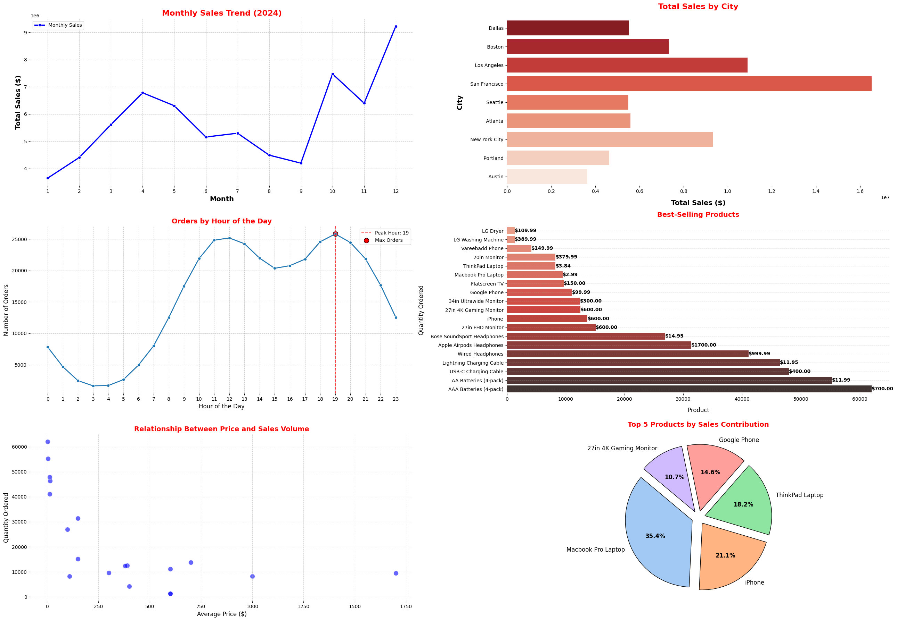
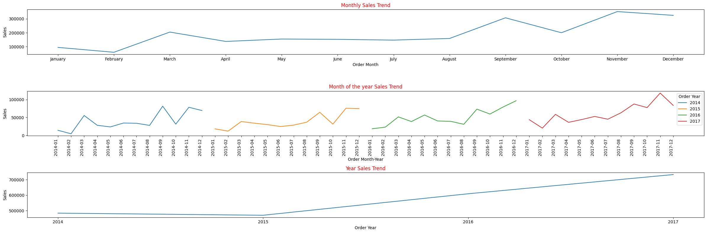
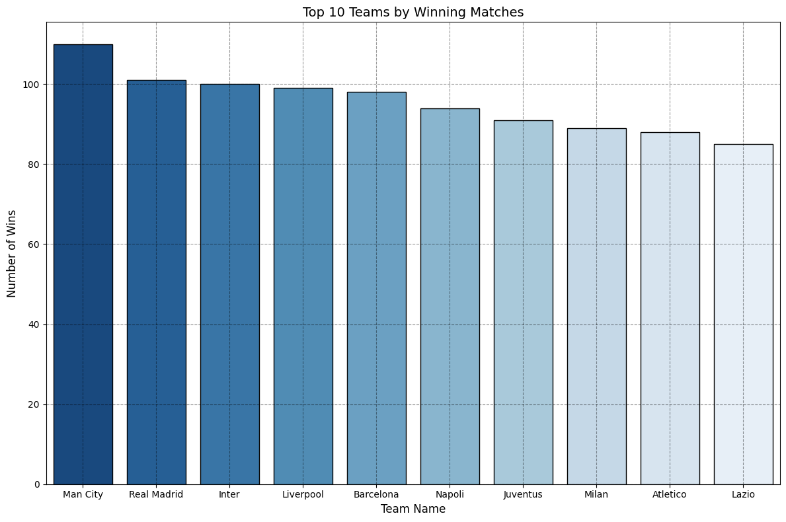

This dashboard provides key insights into sales data, analyzing trends over time, geographic distribution, product performance, and customer purchase behavior.
The visualizations help in understanding sales dynamics, identifying peak sales periods, and determining top-performing products.


Conducted an end-to-end data analysis project on a retail superstore dataset uncovering key
insights on sales, profit, and discount strategies. Built visualizations models to analyze
customer behavior and optimize business performance..

This project dives into analyzing match data from the English, Spanish, and Italian leagues using a robust dataset. Leveraged Python libraries like Pandas, Matplotlib, and Seaborn for data cleaning and visualization. Employed machine learning techniques to uncover insights and evaluate performance metrics.